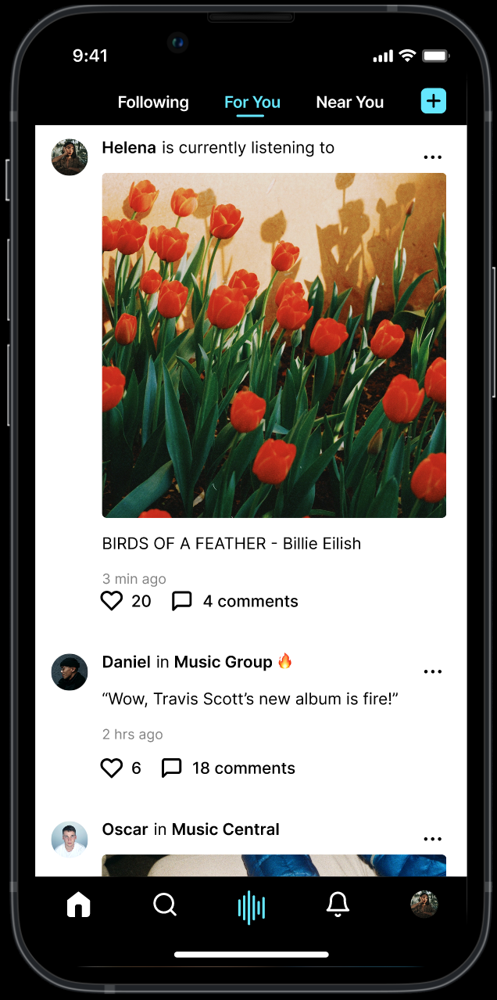
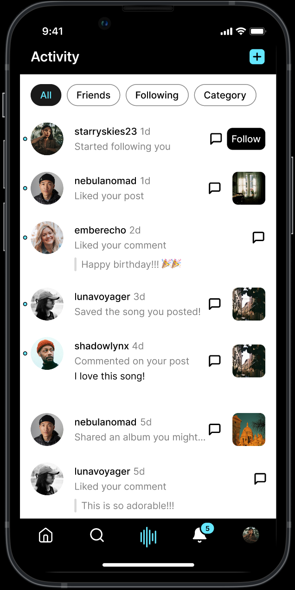
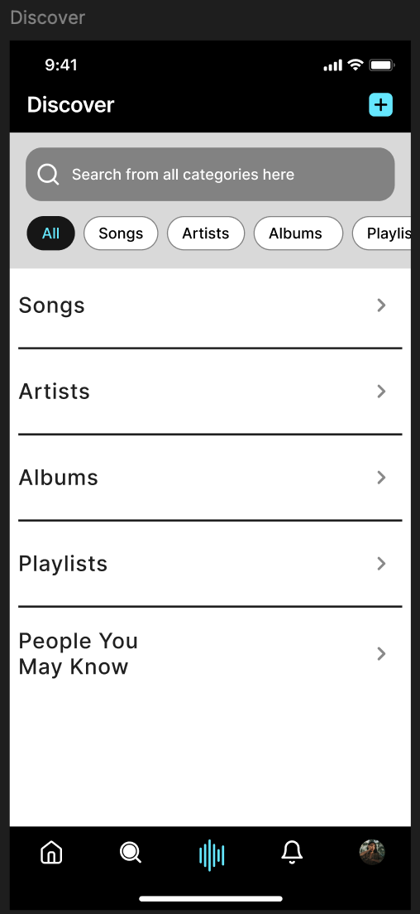

I also have UI/UX design experience for mobile apps, as seen in the sample images on the right!
These UIs were created for a social music-listening app, where people can share their music listening with their friends and even discover new music through other users. The design language of the app is more simple and intuitive, so that users can easily learn to use the app.


